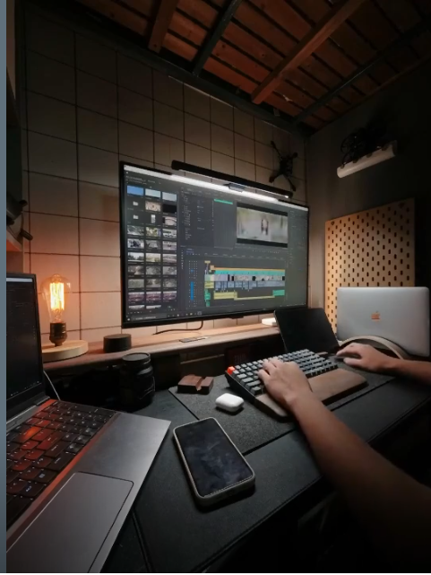
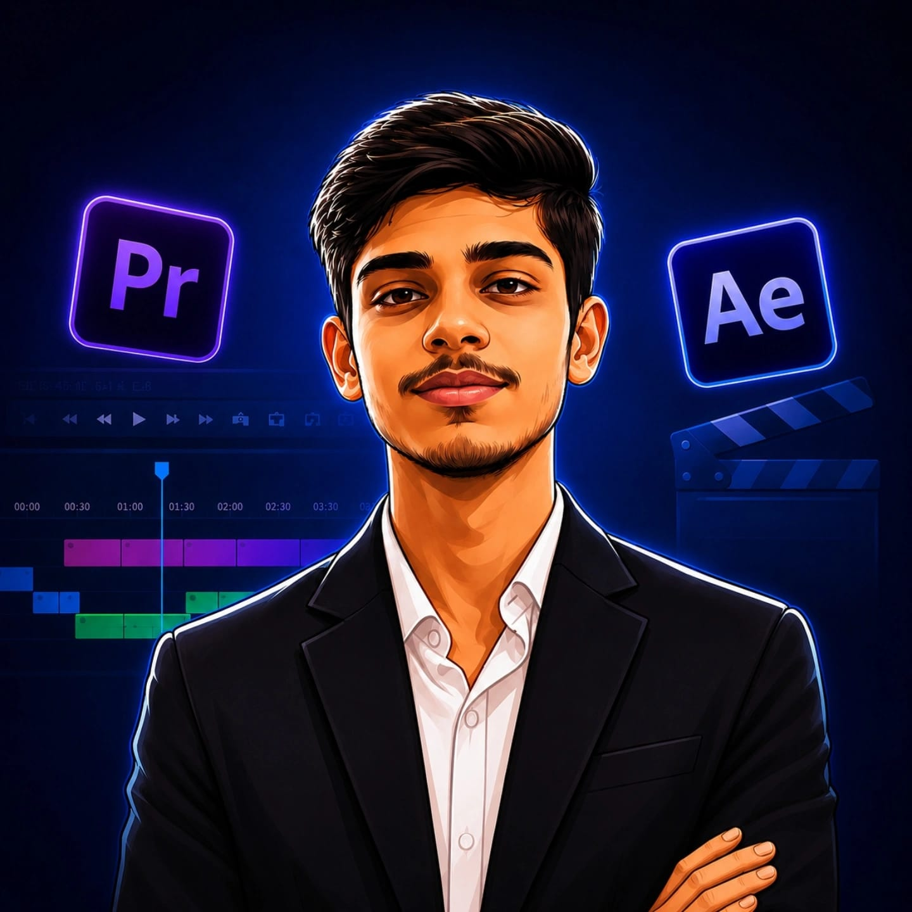

Motion graphics
VIDEO EDITOR OPEN FOR COLLABORATIONS
Stories, shaped with intention.
Ideas in.
Impact out.
I’m Faishal — a video editor turning raw footage into stories that hold attention and stay with you.

A collection of moving moments
02 / The person behind the edit
Good edits
make you feel.
I’m Faishal, a video editor passionate about visual storytelling, engaging pacing, sound design, and creating videos that capture attention.
I turn raw footage into compelling stories that people feel, remember, and share. From the first rough cut to the final color pass, I bring care and curiosity to every frame.
A little more about working together ↗Faishal.
03 / Selected work
A few things
in motion.
A collection of edits made to move at the right pace, for the right reason.
04 / Services
What I do.
One thoughtful process, tailored to the story you want to tell.
From first cut
to final frame.
01
YouTube video editing
Long-form storytelling, pacing & polish
↗02
Reels & YouTube Shorts
Vertical edits built for the scroll
↗03
Football & sports edits
Energy, timing & match-day moments
↗04
Brand films & ads
Distinctive films for people and products
↗05
Motion graphics
Movement that gives your message shape
↗06
Sound design & color
The finishing touches that make it land
↗05 / The toolkit
Craft meets
curiosity.
The tools matter. The choices matter more. I bring both to every project.
Software
The craft
✳ Every frame has a reason.
06 / Your next story
Let’s make
something matter.
Have a project in mind? Tell me what you’re making and we’ll take it from there.
Start a conversation ↗renderbyfaishal@gmail.comIndia · Available worldwide